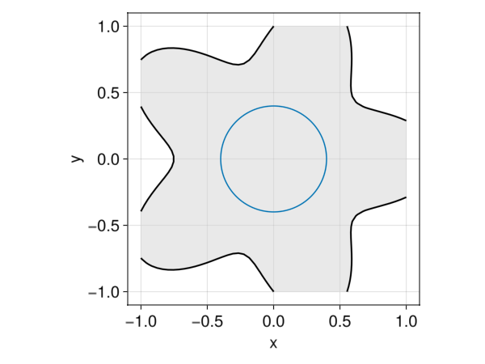

Shape optimization: a primer
Isoperimetric inequality as a shape optimization problem
We consider in this example the isoperimetric inequality which states that among all closed surfaces enclosing a fixed area with volume $V_0 > 0$, the sphere is the one with minimal perimeter. We show here how to demonstrate this result through numerical optimization.
This example is purely illustrative. The optimization method used here has not been extensively tested. Coupling the LevelSetMethods toolbox to any simulation package makes it possible to solve PDE-constrained optimization problems (see for instance [3]).
To do this, we first define the problem mathematically:
\[ \begin{array}{rl} \displaystyle\min_{\Omega \subset \mathbb{R}^d} & P(\Omega) \\ \text{u.c.} & V(\Omega) = V_0 \end{array},\qquad\text{(1)}\]
where $P(\Omega), V(\Omega)$ are the perimeter and volume of $\Omega$ defined by
\[ V(\Omega) = \int_{\Omega} \:\text{d}\mathbf{x} \quad\text{and}\quad P(\Omega) = \int_{\partial \Omega} \:\text{d}\mathbf{s} .\]
The optimization problem $\text{(1)}$ can be solved using the augmented Lagrangian approach by minimizing iteratively the following functional:
\[ f(\Omega) = P(\Omega) + \lambda (V(\Omega) - V_0) + \frac{\mu}{2} (V(\Omega) - V_0)^2 \qquad\text{(2)}\]
where $\mu$ is a parameter updated during the course of the optimization. To minimize $\text{(2)}$, we use a gradient-based algorithm. For this, we need to define what a small variation of $\Omega$ is. As such, for any shape $\Omega \subset \mathbb{R}^d$ we define (following Hadamard method) its deformation $\Omega_{\boldsymbol{\theta}}$ by a small vector field $\boldsymbol{\theta} \in W^{1,\infty}(\mathbb{R}^d, \mathbb{R}^d)$ as:
\[ \Omega_{\boldsymbol{\theta}} = (\text{Id} + \boldsymbol{\theta})(\Omega) = \{\mathbf{x} + \boldsymbol{\theta}(\mathbf{x}), \mathbf{x} \in \Omega\}.\]
The following first-order Taylor expansion can then be obtained:
\[ f(\Omega_{\boldsymbol{\theta}}) = f(\Omega) + \int_{\partial \Omega} \left( \kappa + (\lambda + \mu (V(\Omega) - V_0)) \right) \boldsymbol{\theta} \cdot \mathbf{n} \:\text{d}\mathbf{s} + o(\boldsymbol{\theta}) .\]
In other words, using $\boldsymbol{\theta} = - (\kappa + (\lambda + \mu (V(\Omega) - V_0))) \mathbf{n}$ and a small enough coefficient $\tau > 0$, $f(\Omega_{\tau\boldsymbol{\theta}})$ is necessary smaller than $f(\Omega)$.
Numerical solution using the level-set method
If $\Omega$ is given by the level-set function $\phi_0 : \R^d \to \R$ then one associated with $\Omega_{\tau\boldsymbol{\theta}}$ is given by $\phi(\cdot, \tau)$ solution of
\[ \partial_t \phi - \kappa |\nabla \phi| - (\lambda + \mu (V(\Omega) - V_0)) |\nabla \phi| = 0\]
with $\phi(\cdot, t = 0) = \phi_0$. In practice, it is easier to deal with deformations of fixed amplitude $s$, i.e. $\|\tau\mathbf{\theta}\|_{L^\infty} = \delta$. The value of $\tau$ is therefore set at each iteration as $\tau = \delta/\|\mathbf{\theta}\|_{L^\infty}$.
This optimization method is implemented in the following Julia code:
using LevelSetMethods
using LinearAlgebra
a = (-1.0, -1.0)
b = (+1.0, +1.0)
n = (50, 50)
grid = CartesianGrid(a, b, n)
ϕ = LevelSetMethods.star(grid)
term1 = NormalMotionTerm(MeshField(X -> 0.0, grid))
term2 = CurvatureTerm(MeshField(X -> -1.0, grid))
terms = (term1, term2)
bc = NeumannGradientBC()
integrator = ForwardEuler(0.5)
eq = LevelSetEquation(; terms, integrator, levelset = ϕ, t = 0, bc)
using GLMakie
nit = 200
anim = with_theme(LevelSetMethods.makie_theme()) do
λ, μ = 0.0, 0.1
c = 1.1
V0 = 0.5
R0 = sqrt(V0/π)
P0 = 2π*R0
δ = 0.25
eq.t = 0
obs = Observable(eq)
fig = Figure()
ax = Axis(fig[1, 1])
plot!(ax, obs)
arc!([0; 0], R0, 0, 2π)
record(fig, joinpath(@__DIR__,"optimization.gif"), 1:nit) do it
P = LevelSetMethods.perimeter(ϕ)
V = LevelSetMethods.volume(ϕ)
term1 = NormalMotionTerm(MeshField(X -> -(λ + μ * (V - V0)), grid))
eq.terms = (term1, term2)
τ = δ * LevelSetMethods.compute_cfl(eq.terms, eq.state, eq.t)
integrate!(eq, eq.t + τ)
λ += μ * (V - V0)
μ *= c
return obs[] = eq
end
end"/home/runner/work/LevelSetMethods.jl/LevelSetMethods.jl/docs/build/optimization.gif"
Different values and updates for the $\lambda$ and $\mu$ coefficients can be used to control the extent to which the optimization focuses on minimizing the objective or satisfying the constraint. Taking a smaller time step can also limit the oscillations observed at the end of optimization.